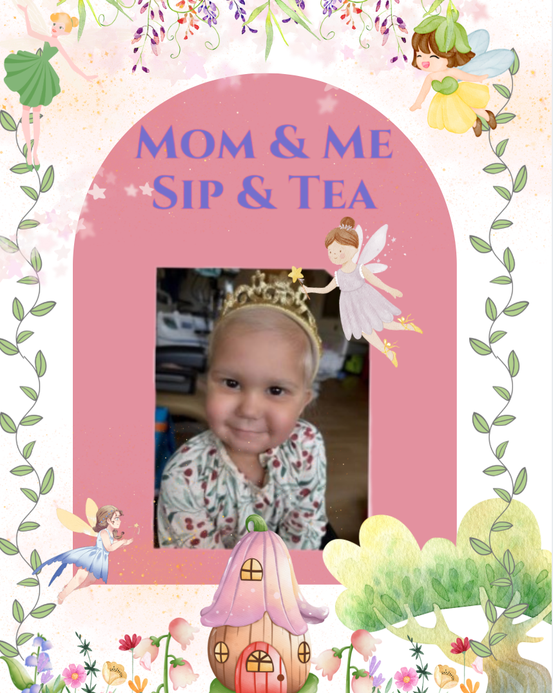

Come out and enjoy a tea party to support community members who need help.
This year our tea is to support Nora, who is 3 years old and fighting against HLH
All proceeds go to Noras family to help relieve some of the finicial stress so they can focus on giving Nora the childhood she deserves.
For more information visit our
Facebook.